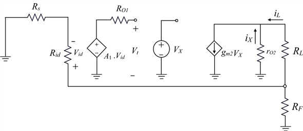

Define loop gain  is,
is,
Use current division rule to find the load current .
Use current division rule to find the current flows through resistor.
Substitute for in the equation.
Refer to the circuit diagram of trans-conductance amplifier in Figure 10.22(a) in the textbook.

Figure 1
Define loop gain is,
Use current division rule to find the load current .
Use current division rule to find the current flows through resistor.
Substitute for in the equation.
From Figure 1, the voltage
Use ohm’s law to find the voltage .
.
Substitute for  in the equation.
in the equation.
Substitute for  in the equation.
in the equation.
Rewrite the loop gain expression.
Since is usually very small and
Thus, loop gain of the amplifier  is .
is .